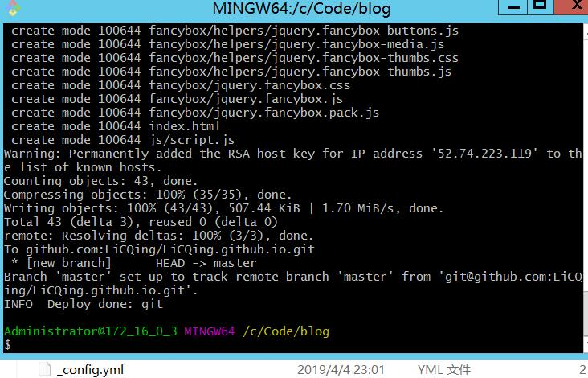

前言
最近在学java框架，想利用博客记录下来学习过程以及学习成果，同时也算为自己做一个笔记，平时都是使用Xmind思维导图做笔记，但是在手机上不太方便回顾。本来是打算自己用java写一个博客系统出来，一来记录自己的学习路程，二来可以作为毕业设计，不过考虑到打算重构之前的在线购物系统，以及水平能力有限，便放弃了这个想法。好在无意中接触了hexo，首先hexo的风格吸引了我，画面简洁。其次是功能强大，基本上该有的功能都有。再加上正在学习使用MarkDown书写工具，以及接触GitHub，可以说是各种机缘巧合。正好进行一个系统的全面的学习。
我分别在不同的电脑上搭建了两次博客，第一次是笔记本（win10），可以说是磕磕碰碰，最后勉勉强强算搭上了。第二次是在第一次记录的基础上，使用腾讯云服务器（win server 2012）进行搭建，整个过程都非常顺利，这个博客便是第二次搭配记录。跟着这个步骤，最多30分钟便能搭起一个基础的博客。不过基础的博客肯定不能满足后续的要求。
在下一篇学习页面设置和写/发博客。提前预览
建议搭配目录阅读
1.概述
Hexo官网：A fast, simple & powerful blog framework,即:快速、简洁且高效的博客框架。基于Node.js 所带来的超快生成速度，让上百个页面在几秒内瞬间完成渲染，只需一条指令即可部署到 GitHub Pages, Heroku 或其他网站，Hexo 拥有强大的插件系统，安装插件可以让 Hexo 支持 Jade, CoffeeScript。
也就是说，只需要30分钟左右就可以搭建一个属于自己的个人博客。同时又有丰富的插件可以使你尽可能的完善自己的博客细节。利用GitHub的git pages，可以托管我们的静态网页，而且可以自定义域名（参考中有）。等博客搭建完毕，我们就只需要写博客内容了。
2.搭建环境
2.1 Node.js
一个JavaScript运行环境,我们使用它来生成我们博客的静态页面。如果不确定自己电脑上是否安装了Node.js,可以在cmd命令行下运行1
npm -v
运行结果如下表示未安装：
接下来我们需要去官网下载，进行安装。同时如果版本过低可能会导致部分功能丢失或者配置方法不同，建议6.0以上。

安装完成之后我们再运行cmd命令会显示如下结果
如果还是提示非命令，有可能是node没有加到环境变量中去，在环境变量的path中，加上刚刚的安装目录。（如我的安装目录：C:\Program Files\nodejs\）有自定义目录需要修改成自定义目录。
2.2 Git 环境
接着我们就是需要安装Git了，同时我们先查看一下电脑是否安装了git，在cmd中执行
1 | git --version |
如果显示为非命令，则需要我们下载安装，可以上官网，如果下载较慢的话，也可以上某度云进行下载，安装过程基本上选择默认的就好了。建议版本2.0以上
验证是否安装成功同上，不过这次需要加的环境变量则是Git安装目录下的cmd，（如我的：C:\Program Files\Git\cmd）
2.3 Git hub
Git-hub,注册过程就不多赘述，基本上不会有什么问题。重要的是需要建立存放代码的仓库和添加SSHkey保证本地能正常上传代码到github。
1）建立仓库：登陆GitHub之后，在点击右上角的“+”号，选择 new repository。
在 Repository name中填入”用户名.github.io”。用户名就是GitHub的用户名。
最后点击create repository 这一步就ok了。
2）第二步，我们来添加SSHkey,确保我们本地有权限能够提交代码到github。首先我们仍然测试看看本地能否存在key（第一次当然是没有，不过为了和后面出现对比，我们可以先测试一下）。首先在桌面右击 -> 选择Git Bash Here调出git命令台。输入下面命令：
1 | ssh -T git@github.com |
如果提示< Are you sure you want to continue connecting (yes/no)?>，输入yes
这就是本地没有权限连接的，需要我们创建SSHkey。我们继续输入以下命令
1 | ssh-keygen -t rsa -C "注册github的邮箱" |
三次回车之后，会出项下面的结果：
然后git会自动在c盘用户下面的当前用户文件夹新建一个.ssh文件，里面有一个 id_rsa.pub 文件。使用记事本打开之后，复制里面的内容。
我们在本地生成好key之后，需要添加到github上。在GitHub网页进入个人设置选择SSH and GPG keys，新建一个ssh key：
把复制过来的内容粘贴在key框，上面的title可以写，也可以不写，不写会默认使用邮箱。如果为了区分多台客户端，可以填写区分一下。
保存之后，输入密码确认，跳转到sshkey页面，你会发现刚刚添加的key已经在里面了。到这里我们就已经添加成功了，于是我们再测试一下连接，出现以下结果就是正确的。
然后再运行以下命令，来让git记录我们的身份1
2git config --global user.name "GitHub账号"
git config --global user.email "注册邮箱"
到这里我们的准备工作就已经结束了。下面就开始搭建博客，如果到这里就放弃，那就前功尽弃了（加油）。
3.搭建博客
3.1 安装hexo
git bash 执行以下代码：1
npm install -g hexo
可能会要一点时间，如果没有报错(ERR)，说明安装问题。
3.2搭建博客
新建一个文件夹，用来存放我们的博客文件。右键 ->git bash，依次运行以下代码。‘#’后面是注释
1 | hexo init #初始化hexo环境 |
执行完最后一条命令，会出现如上结果。从图中我们也得知，在浏览器输入< http://localhost:4000/ > 就可以浏览我们的博客了，然后按ctrl + c 结束本地服务。生成的静态文件就在public文件夹中。
至此我们就快大功告成，把代码同步到github让它帮我们管理代码。同时，我们也可以输入之前我们定义的仓库名，进行外网访问。不过，我们还要进行最后一步配置。
3.3配置并同步代码
用文本文件打开刚刚存放博客文件的目录中的 `_config.yml` 文件，然后拉到最后找到deploy:
按照如下进行配置，冒号后面一定要跟空格：
1 | deploy: |
GitHub用户名就是刚刚新建仓库的名称。保存之后，再依次运行以下命令：
1 | npm install hexo-deployer-git --save #安装插件 |

上传成功之后，然后我们可以到我们GitHub的仓库下看看，是不是把本地的文件上传过去了。然后我们利用其它的浏览器，或者客户端输入 刚刚定义的仓库名称 < https://licqing.github.io/ >就可以访问你的博客了。
搭建博客的结束，正是入门博客的开始。hexo文档。后续将配置博客样式和书写博客。
4.途中遇见的问题
说说第一次搭配遇到的问题和最后怎么解决的吧。
- hexo init 命令 ： 错误 conmand not found 。应该是hexo未配置进环境变量，我们找到node_modules文件夹,这时我们发现里面有很多文件夹，找到hexo文件夹,这里我们可以看到一个bin文件夹，进到bin。然后把这个目录加到环境变量path中去。
- hexo init 命令 ： 错误 FATAL not empty。存放博客的地方一定是需要空文件夹。注意检查空文件夹。
- hexo g 命令 ： 错误 FATAL bad indentation of a mapping entry at line 82, column 13。 _config.yml文件冒号后面没有跟空格
5.参考（可配置域名）
https://www.jianshu.com/p/05289a4bc8b2
https://www.cnblogs.com/liuxianan/p/build-blog-website-by-hexo-github.html
https://hexo.io/zh-cn/docs/writing